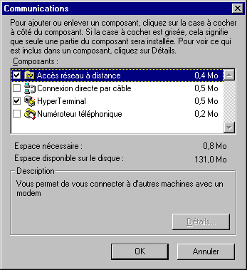

WINDOWS 95 et Internet
Configuration d'une connexion en dial-up IP
Document inspiré de
France-Pratique
1ére étape : configurer "ACCES RESEAU A DISTANCE"
Insérez le CD-ROM de WINDOWS 95 dans votre lecteur afin que les fichiers nécessaires puissent être installés au cours de cette procédure
(si vous installez WINDOWS 95 à partir des disquettes, attendez que WINDOWS 95 vous les demande).
- A partir du bureau de WINDOWS 95, Double-cliquez sur poste de travail.
- Double-cliquez sur l'icône "Panneau de configuration".
- Double cliquez sur l'icône "Ajout/suppression de programme" : une fenêtre "propriétés" apparaît.
- Cliquez sur l'onglet "Installation de windows"
- Sélectionez la ligne "Communication" et cochez la case en début de ligne.
- Cliquez sur "Détail..."
- Sélectionez la ligne "Accès réseau à distance" et cochez la case en début de ligne.

- Cliquez sur OK
- Cliquez sur "Appliquer" tout en bas de la fenêtre.
A ce stade une fenêtre peut apparaître qui vous informe que "Microsoft exchange doit être installé ..." cliquez sur le bouton "OUI".
Maintenant, WINDOWS va installer les fichiers nécessaires à partir de votre CD-ROM (ou de vos disquettes) : acceptez la mise à jour des réglages de "communication à distance".
Un message vous informe que votre ordinateur doit être redémarré : acceptez ce choix.
Note : Il est possible qu'après le redémarrage, un "assistant Ms Exchange" vous propose de mettre en place un certain nombre de services : il n'est pas nécessaire d'en sélectionner.
Une nouvelle icône "accès réseau à distance" est maintenant présente dans votre fenêtre "poste de travail".
© FRANCE PRATIQUE
Sommaire Etape 2